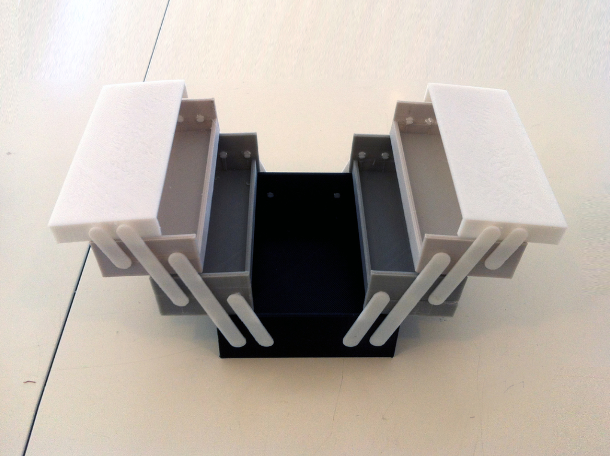

By Sherry Wang
For this proposal, I'm including the concept, a breakdown of tasks, the timeline, and the bill of materials.
For the final project, I will be designing and building a foldable tool box. I will use a combination of Rhino modeling, Grasshopper parametric design, laser cutting, 3d printing, interference fits, and mechanism. Here's a sketch of the box:
I got inspired by this link from Thingiverse: Foldable Tool Box. This is still a Work in Progress, plus some comments down below say that the dimensions are off, therefore my plan is to use this only as a sketch and design everything from scratch on my own.

As the name suggests, the intended use case of this design is to hold tools and/or small items that are easy to lose. It can carry nails, screws, buttons, end mills, etc. When closed, it would be a rectangular box that has three levels of containers - a large one at the bottom, and four smaller drawers on top. When being unfolded, all drawers would expand to show everything inside, in the ease of taking things out.
The box can be broken down into two main parts: the containers and the connecting pieces.
For the containers, including the caps, I plan to have them laser cutted out of woodboards and press fit together. Since we had an assignment about making boxes (although that was CNC milling), I would be using the similar design plus a YouTube tutorial found on Discord, thanks to Bailey.
For the connecting pieces, here's a rough rough sketch. The real pieces would additionally include a design similar to snap buttons at each end, so that they can be press fit into the holes on the containers. These connecting pieces would be 3d printed.
Combining these two parts together, tasks that I need to finish are: 1. Design the containers and caps in CAD 2. Design the connecting pieces in CAD 3. Render the design in CAD 4. Laser cut the containers and caps at the Mill 5. Assemble the containers and caps 6. 3d print the connecting pieces 7. Assemble the box 8. Document everything down, practice the presentation, and submit on Canvas
Based on these tasks above, here's a timeline that I will follow strictly:
For week 1, which is Thanksgiving (11/23 - 11/29), I will be focusing on CAD modeling and 3d printing (task 1 & 2 & 6). Both the containers and connecting pieces will require the use of Grasshopper, which might be time-consuming. Once the design is done, I will start 3d printing first, since the Mill will be closed. Printing should not take too long, as it's the connecting pieces only.
For week 2, which is 11/30 - 12/6, the first thing I will do is to head to the Mill to laser cut the containers and caps (task 4 & 5). Then I will assemble the entire tool box together (task 7). Once I'm sure all the dimensions and designs are correct, I will render the thing in Rhino and finish the documentation (task 3 & 8).
Besides the usual software and tools we have been using throughout this quarter, two additional materials are needed for this project:
@3dfactorytlv from Thingiverse for the tool box idea!
@baileynd on Discord for the box with joints video tutorial!
the Mill employees, Junchao, and Nadya as always!